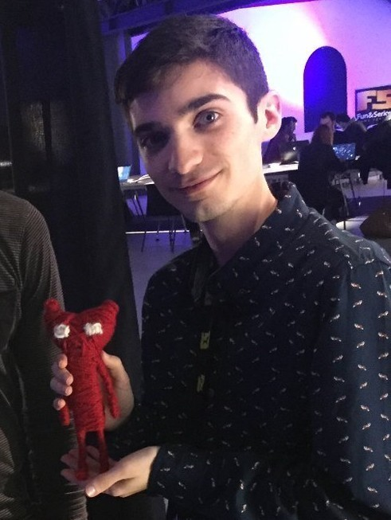
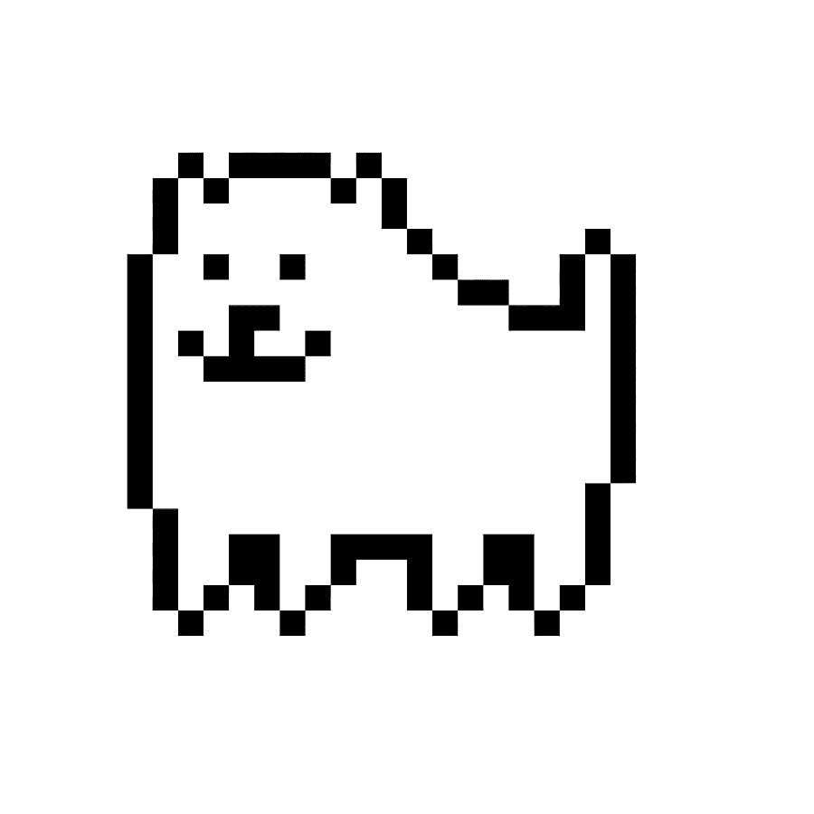
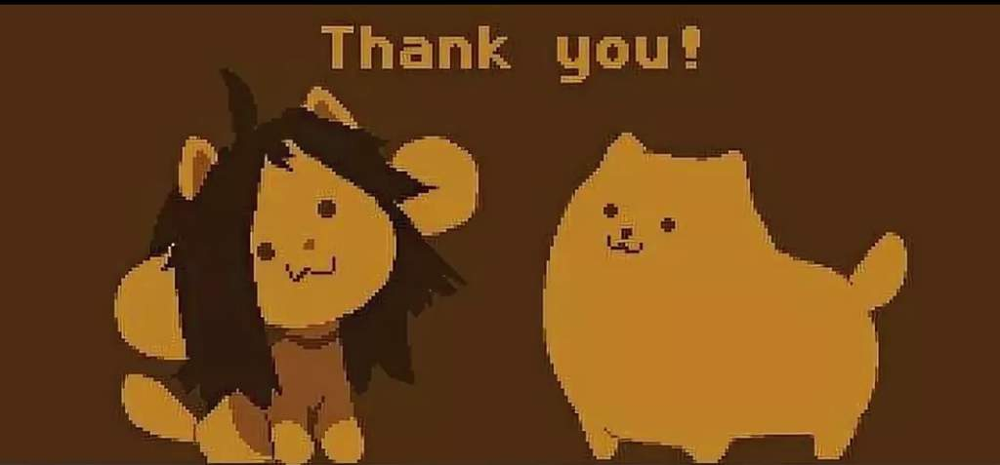

Тоби «Radiation» Фокс, также известный под ником FwugRadiation — музыкальный композитор и разработчик игр. Он разработал высоко оценённую критиками RPG Undertale и создал саундтреки для неё в 2015 году. Его аватар — Надоедливая собака.
 Тоби Фокс стартовал как форумный участник фан-сайта EarthBound, Starmen.Net, под псевдонимом «Radiation», где он руководил веб-сайтом PK Hack форум до 2011. Впервые вышел на публику с печально известной «EarthBound Halloween Hack», также известной как «Press the B Button, Stupid!», которая была вынесена на Хэллоуинский Фанфест Starmen.Net 2008.Тоби Фокс также продюсировал музыку для веб-комикса Homestuck, после чего он захотел создать Undertale, который был частично разработан в подвале Эндрю Хасси
Undertale (дословно переводится как «Подземная сказка» или «Подземная история») — компьютерная ролевая игра, разработанная Тоби Фоксом. Игрок управляет ребёнком, который случайно упал в пропасть и попал в Подземелье – большой изолированный от людей мир. В попытках вернуться домой игрок встречает множество различных существ, некоторые из которых относятся к нему враждебно. Во время битвы игрок управляет маленьким сердцем, которое символизирует душу героя; избегая атак противника в стиле «Bullet Hell», игрок может убить нападавшего или пощадить, что впоследствии будет влиять на концовку. Также на концовку влияет взаимодействие с иными персонажами вне сражения.
Тоби Фокс создал Undertale своими силами, включая написание сюжета и музыки; лишь некоторые дополнительные спрайты были нарисованы другими художниками. На создание Undertale Фокса вдохновила японская ролевая игра EarthBound, а также английская ситуационная комедия «Мистер Бин». Изначально предполагалось, что игра будет длиться примерно два часа и будет выпущена в середине 2014-го года, но разработка затянулась на ближайшие три года.

Deltarune (дословно переводится как «Дельта Руна» или «Руна Дельта») — компьютерная ролевая игра, разработанная Тоби Фоксом, которая была выпущена на Хэллоуин — 31 октября 2018 года. Игра так и не является законченной.

Саундтреки из игры Undertale, написанные Тоби Фоксом, можно отнести к разным жанрам музыки, таким как: 8-битный/chiptune - это стиль музыки, созданный с использованием звуковых чипов игровых приставок и компьютеров 80-х годов; Оркестровый - некоторые композиции в Undertale имеют оркестровый звук; Электронный.
Самые известные произведения Fox'а
Finale
Save_the_world
Megolovania
Spear_of_Justice
Spider_Dance
